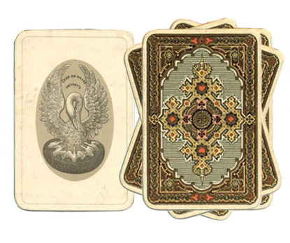

Гадание на картах
Гадание – старинный способ получить ответы на волнующие вопросы. Гаданий существует великое множество, а гадание на картах – один их самых распространенных способов. Готовы узнать ответы?

Начать игру
Начать игру
Начать игру
Начать игру
Нет, спасибо
Источник изображения: Игральные карты «Русский стиль», 1911 год
Приложение создано в учебных целях